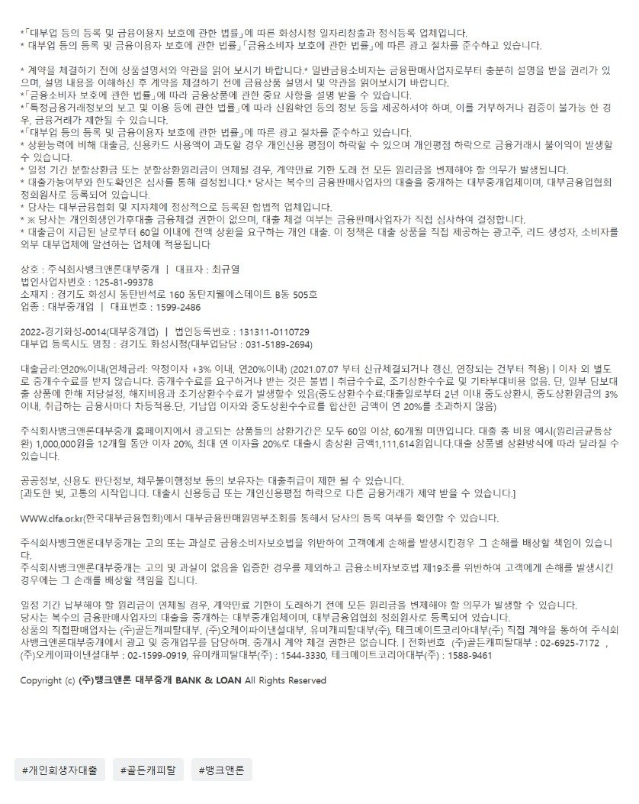

[개인회생자대출공지] 골든캐피탈 공격영업 공지.
[개인회생자대출공지] 골든캐피탈 공격영업 공지.
안녕하세요~ 뱅크앤론 (주식회사뱅크앤론대부중개) 카페매니저 김용혁 입니다.
골든캐피탈에서 현재 매우 공격적으로 개인회생자대출 심사에 임하고 있어 공
지드립니다. 현재 골든캐피탈은 접수되는 모든 고객님들을 긍적적으로 검토해
주기위해서 사전문의 받지 않고 모두 본접수하게하고 있습니다.
현재 기대출이 변제금적립금보다 많아도 소득대비 상환능력 충분하다면 대출
해주고 있습니다. 변제금미납이 과다한 경우도 마찬가지 입니다. 회생 완주 의
지가 명확하고 현재 조건, 상황이 대출 상환에 문제가 없다면 매우 높은 승인
률로 또 괜찮은 한도로 개인회생자대출을 해주고 있습니다.
골든캐피탈은 개시결정자도, 4대미가입직장인도 대출 심사를 해주는 대부금융
사 입니다. 소득과 재직증빙 가능하시고 대출 상환이 가능한 모든 분들은 정식
수탁법인인 당사로 문의 주셔서 필요한 도움 받으시기 바랍니다~
[개인회생자대출] 뱅크앤론 YoTube 영상 모음.
1. 뱅크앤론의 개인회생자대출이 좋은이유[YouTube]
2. [개인회생자대출] 미납과다(7.51회 1846만미납)고객 2천만승인사례 [YouTube]
3. [개인회생자대출사례] 기대출4건, 기부결과다 고객님의 2천만원 승인사례. (YouTube)
4. [개인회생자대출사례] 타 대부금융사 모두 부결된 고객님, 1500만원 승인사례.
5. [개인회생자대출사례] 미납6.98회로 총 미납액 1천만이상고객, 1200만원 승인사례.
6. [재회생자대출사례] 재 회생, 변제금 60회차 중 7회납부, 1000만 승인사례.
7. [개인회생자대출성공사례] 재직기간 2개월, 1천만 승인사례.
8. [개시결정자대출사례] 회생인가 전, 개시결정 상태에서도 개인회생대출 성공사례.
9. [개인회생대출사례] 변제금 미납3회와 기대출 세건, 미납정리 및 대출 한건으로 통합에 성공한사례.
10. [개인회생대출사례] 36회중 13회차, 기대출 5건을 3건으로 줄여준 성공사례!!

https://cafe.naver.com/cityman88/309471